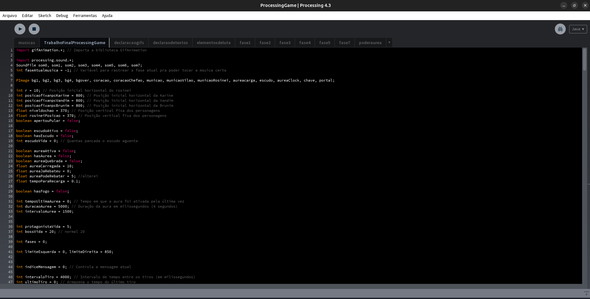
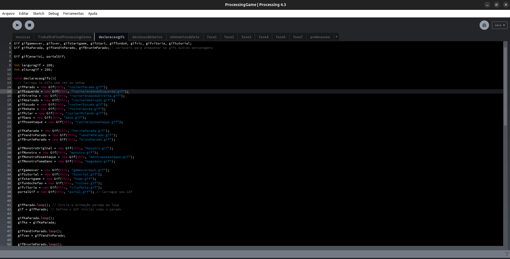
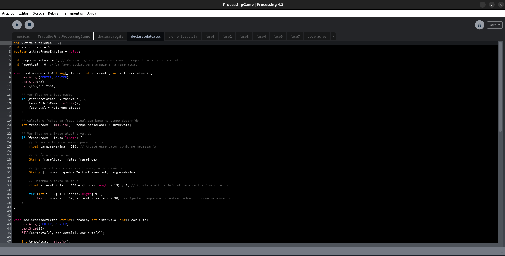
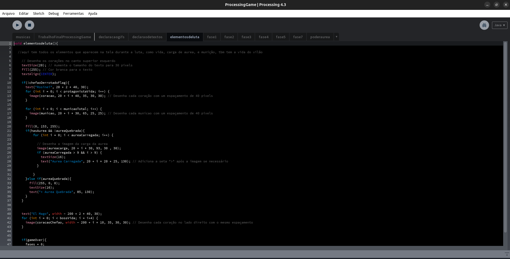
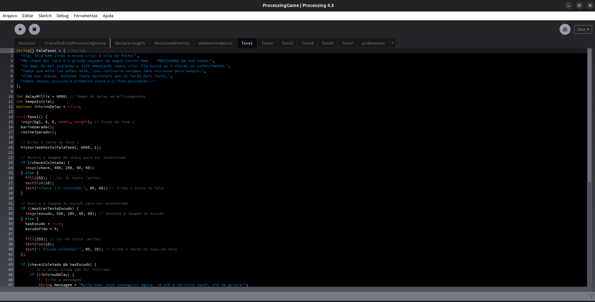
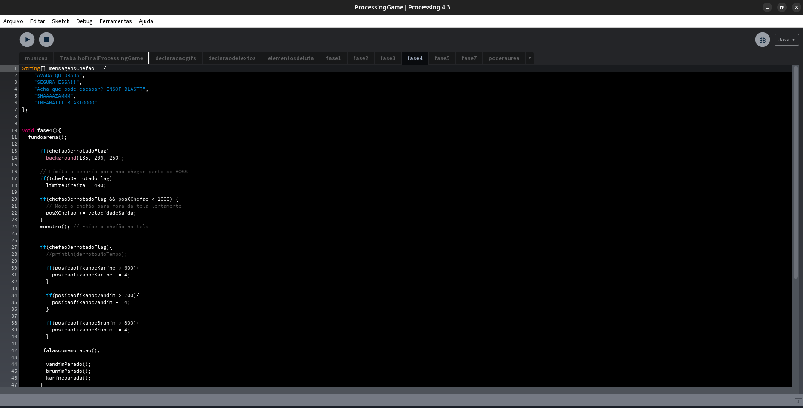
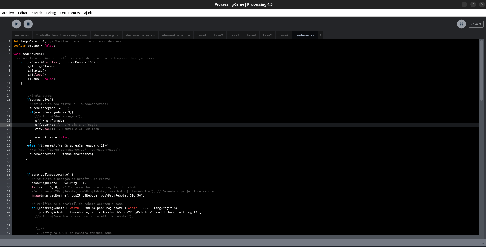
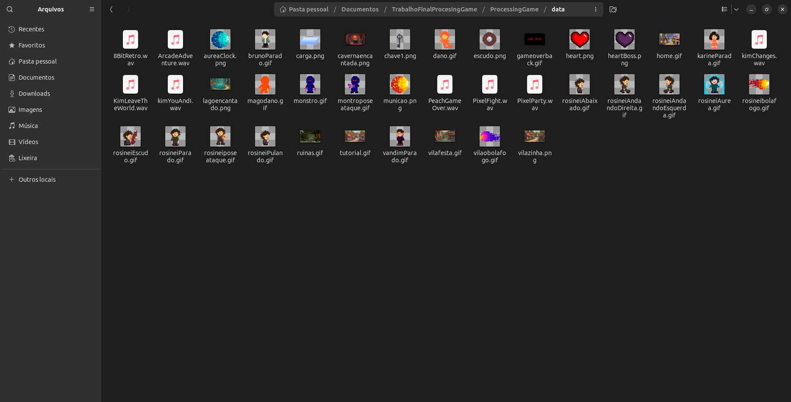
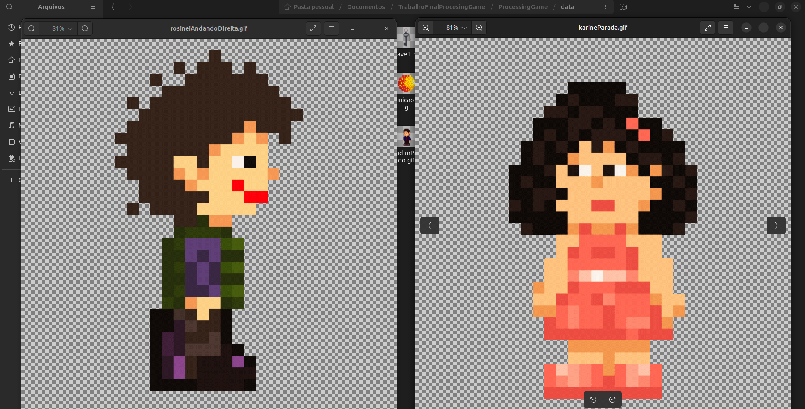
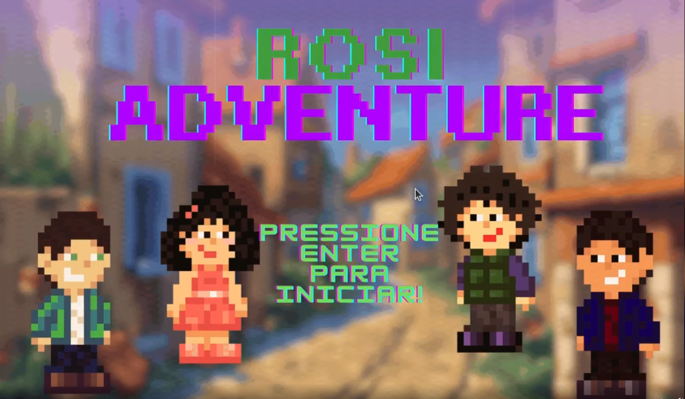

RosiAdventure
Um jogo deenvolvido por mim e pelo meu grupo de classe, para uma materia optativa da faculdade. O jogo é composto por 4 personagens, o principal é uma representação do nosos professor, e os outros 3 são representações de nós, os alunos.
O jogo é uma aventura em que o personagem principal tem que resgatar alguns itens que ficam escondidos no cenario, a cada fase um ppesonalgem chega para contar uma historia, e no final, o jogador quem q usar esses itens para lutar com o vilao final e vencer o jogo. Salvando a vila e todos os personagens.,
O Jogo foi todo desenvolvido com uma ferramenta chamada processing, que é uma linguagem de programação voltada para a criação de arte digital e interação. Foi um projheto muito divertido de fazer, e o resultado final ficou muito bom. e demorou uns 3 meses para ser finalizado.
Caso queira ver o funcionamento do jogo basta clicar aqui para assistir.










Bibliotecas Utilizadas:
gifAnimation; processing.sound
Gostou deste projeto?
Ele está disponível no GitHub com visualização privada e documentação completa. Vamos conversar sobre como posso aplicar essas tecnologias na sua ideia!